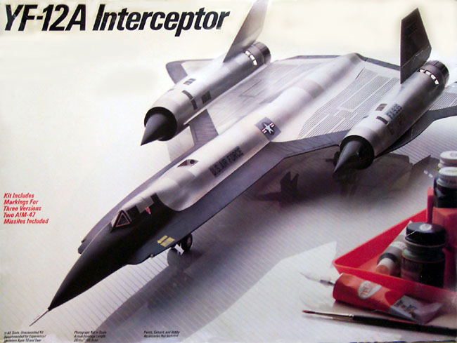
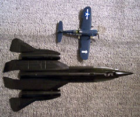
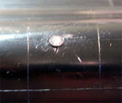
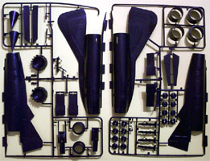
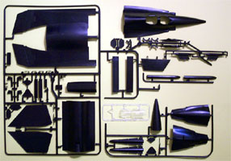
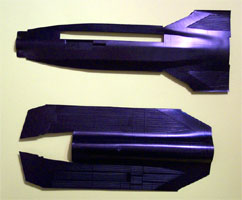
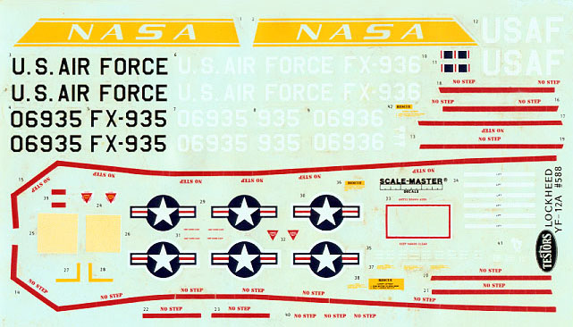

{kind=link}
{kind=link}
{kind=link}
{kind=link}


Testors 1/48 Scale Lockheed YF-12A Interceptor

Kit #0588 Collector's Market Value
Images and text Copyright � 2003 by Matt Swan
The SR-71 Blackbird, developed by the infamous Lockheed Skunk Works as a replacement for the U-2 spy plane, was and still is the fastest jet aircraft in the world. So exciting were the test results of the SR-71 that Air Defense Command proposed a follow-on contract for the YF-12A. The YF-12A Interceptor was an armed version of the SR-71. Imagine, if you will, an interceptor the size of a Boing 707. The production contract was to be for 200 airplanes designated F-12! Modifications were made to the photo bays to accept the AIM-47 missiles; a cockpit was added to accommodate the Fire Control Officer; two ventral fins were added under each nacelle and a folding stabilizer fin was added under the centerline of the aircraft. The YF12A carried three GAR9/AIM-47 missiles or could carry a 250 Kiloton nuclear warhead. The YF-12A nose is rounded to accommodate the Hughes ASG-18 Radar and Fire Control System. Ultimately only three of these incredible steeds were produced.
Lockheed Skunk Works manufactured three YF12A Interceptor aircraft and the design is basically the same as the SR-71. During testing of the YF-12A, seven known missile firings occurred. These were all conducted with the YF12A flying at Mach 2.0 or faster. YF-12A #936 sported three White Blackbird silhouettes stenciled on the nose under the cockpit; these reflect 3 World Record Flights on 1 May 1965.
YF12A #60-6934 LAC#1001 was the 1st YF-12A and performed it's maiden flight on 7 August 1963. On 28 September 1965 flying at Mach 3.2 and 75,000 feet, #934 fired an AIM-47 missile at a target Q-2C Drone destroying the Drone at 20,000 feet. The YF12A #934 aircraft was seriously damaged during a landing at Edwards AFB. It was placed in storage in Palmdale, California and eventually the rear half of #934 was used to build the SR-71C #64-17981 trainer which flew for the first time on March 14, 1969.
YF12A #60-6935 LAC #1002 is the sole surviving aircraft of the Interceptor series. On March 18, 1965 flying at mach 2.2 and altitude of 65,000 feet, #935 launched an AIM-47 missile successfully intercepting and destroying a Q-2C Drone flying at 40,000 feet. Again on May 19, 1965 flying at Mach 2.3 and altitude of 65,000 feet, #935 launched an AIM-47 missile successfully intercepting and destroying a Q-2C Drone flying at 20,000 feet. She was in storage from 1967 to December of 1969 at which time #935 was loaned to NASA as a test aircraft where she flew 145 missions for NASA. On November 07, 1979, #935 was flown to the U.S. Air Force Museum at Wright-Patterson AFB, Ohio for permanent display.
On March 22, 1966, YF12A #60-6936 LAC #1003 flying at Mach 3.15 and altitude of 74,500 feet launched an AIM-47 missile successfully intercepting and destroying a Q-2C Drone flying at 1,500 feet. On May 13, 1966 flying at Mach 3.17 and an altitude of 74,000 feet #936 successfully intercepted and destroyed a Q-2C Drone flying at 20,000 feet. The third and final missile intercept and most impressive occurred on September 21, 1966 with #936 flying at Mach 3.2 and an altitude of 75,000 feet successfully intercepted and destroyed a QB-47. This intercept removed three feet off the left horizontal stabilizer of the QB-47. YF-12A #936 set the world Speed records on 1 May 1965. #936 was briefly retired but reactivated for NASA test programs. This aircraft was lost on June 24, 1971 on the 63rd flight test in an accident at Edwards AFB. On approach to the traffic pattern a fire broke out due to a fuel line fracture caused by metal fatigue. The flames quickly enveloped the entire aircraft and on the base leg both crewmembers ejected. #936 was totally destroyed. Both crewmembers survived.
During it�s career the YF-12A established numerous speed and altitude records including an absolute sustained altitude record of 80,258 feet and a 15/25 km closed circuit speed of 2,070.1 mph. This aircraft was powered by a pair of Pratt and Whitney J58 engines that could reportedly push it to a maximum speed of Mach 3.35 and a maximum altitude of 92,500 feet.
The Kit

This model has been out of production for several years now and is fairly difficult to get hold of. Recently Testors has reissued the 1/48 scale SR-71 kit so the potential exists that this kit may soon be back on hobby shop shelves. This is a really big kit and it comes in a really big box. Just to give you an idea of how large this craft is in the picture to the right the main body parts are taped together and that is a 1/48 Corsair sitting next to it. You can click on that image for a larger view. The box is one of those horrid open-end things rather than the conventional two-part box that other model manufactures favor. Inside we have two smaller boxes containing five sprues of parts done in black plastic and one small sprue of clear parts.

While the kits size is impressive the raised panel lines are not. The parts are rife with raised lines throughout. There are recessed areas for the corrugated areas in the wings and on the control surfaces but other than that � raised lines everywhere. The cockpit is on the sparse side also, I think I will have to replace both ejection seat and will be looking for a complete resin replacement for the front office. The kit includes two different styles of dash panels and some conversion parts for a trainer version that are probably holdovers from the SR-71 kit. There are several injection marks on the interior pieces that will present no problem for construction but dead center on the main upper fuselage piece there is a large injection mark. I can�t figure out why they would put it on that side of the sprue when all the rest are concealed. This one will require some repair work. All together there are 106 black plastic injection molded pieces and 3 clear parts for a total piece count of 109. I did test fit several of the larger pieces and found that they have some minor warpage which is not unusual to find in such large pieces but some of them did demonstrate fit problems. I think that when I build this I will assemble the upper and lower fuselage halves independently to try to resolve some of these fit issues. Also, on the lower leading edge of the wing there is a considerable gap that will require careful filling.



Click on images for larger pictures
Now the kit box advertises that there are decals for three different aircraft but that�s not exactly true. What they have included are decals for two aircraft, numbers 935 and 936 and painting instructions to do 936 in a standard scheme or in the record breaking scheme. There are no instructions, decals or reference to 934. The data page of the instructions does mention that there were three aircraft constructed. These are Scale Master decals so the overall quality is definitely there. Lots of stencils are provided as well as the NASA fin logos. Registry is good, color density appears to be good and they look to be thin decals that will settle down nicely, as I said � they�re Scale Master decals.

The instructions are very nicely done with nine black and white pictures of the actual aircraft. They are reminiscent of Pro Modeler instruction booklets. All the instructions are done in English with the first two pages giving the modeler not only a brief history of the aircraft but a lot of instructions and logic associated with painting the aircraft. Throughout the twelve page booklet there are various technical notes scattered that give interesting bits of trivia about the aircraft. Paint codes are listed by Testors paint numbers and by Federal Standard color numbers.
Testors has given us three pages of exterior painting instructions and decal placement guidelines as well as parts options to place the lower stabilizing fin in the folded or extended position. The last page is all black and white photos of the actual aircraft and mostly focuses on the landing gear.
Conclusions
While the kit does have it�s weaknesses, overall it�s a pretty nifty model. It�s big, there�s no doubt about that. The fuselage length measures the same as the wingspan on the Monogram 1/48 B-17G. I can�t understand why Testors didn�t go that little extra to give us all three aircraft markings but there is little that can be done about that now. At one time Pavla Models made a replacement seat set that could be used on this model and True Details did a replacement wheel set but both of these are also out of production. With the current reissue of the SR-71 kit we may see these items return also. Cutting Edge Modelworks does make a wheel hub mask set for this model that is still available and in August 2007 released a very nice and well detailed set of burner cans for this kit and for the SR-71 kit. If you are going to build and collect jets this would make an excellent piece for your collection.